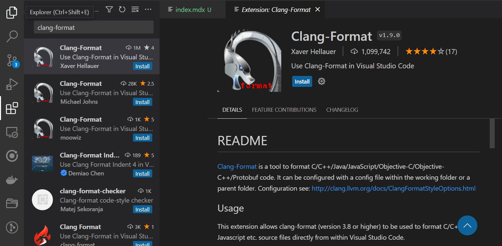

Introduction
Code formatting is an essential aspect of software development that ensures that the codebase is consistent, easy to read, and maintainable.
However, manually formatting code can be time-consuming and error-prone, especially for large projects. That's where automatic code formatting tools come in.
Clang-format is a powerful command-line tool for formatting C and C++ code. It can automatically format code according to a predefined set of rules or a custom configuration file.
In this article, we will explore how to use clang-format with Visual Studio Code (VSCode) to automate code formatting in C/C++ projects.
Clang-format is a widely used tool in the C/C++ community for code formatting.
Here are some reasons why you might want to use it in your projects:
Consistency: Clang-format ensures that your code is formatted consistently across your project. This is important for readability and maintainability.
Saves Time: Manually formatting code can be time-consuming, especially for large projects. With Clang-format, you can automate the process and save time.
Avoids Errors: Manual code formatting is prone to errors. With Clang-format, you can avoid common formatting mistakes and ensure that your code is correctly formatted.
Before we can use Clang-format with VSCode, we need to install it on our system.
There are several ways to install Clang-format, depending on your operating system.
Clang-format is usually available in the official package repositories of most Linux distributions. You can install it using your package manager.
For example, on Ubuntu, you can install "Clang-format" using the following command:
sudo apt-get install clang-format
Clang-format is included in the Xcode developer tools. You can install Xcode from the App Store or from the Apple developer website.
Clang-format can be installed as part of the LLVM toolchain. You can download and install the LLVM toolchain from the official website.
Once you have installed Clang-format, you can verify the installation by running the following command:
clang-format --version
Ubuntu clang-format version 14.0.0-1ubuntu1
This shall display the version of Clang-format that is installed on your system.
Clang-format can be configured using a variety of options, including
- command-line arguments
- configuration files
- editor extensions.
In this article, we will focus on using a configuration file to customize the formatting rules.
A Clang-format configuration file is a text file that specifies the formatting options for Clang-format.
The file should be named .clang-format and placed in the root directory of your project.
Here is an example configuration file:
BasedOnStyle: Google
IndentWidth: 4
ColumnLimit: 120
This configuration file specifies that the formatting style should be based on the Google C++ style guide, the indent width should be 4 spaces, and the column limit should be 120 characters.
The Clang-format documentation provides a comprehensive list of options that can be used in the configuration file.
https://clang.llvm.org/docs/ClangFormatStyleOptions.html
Now that we have installed and configured Clang-format, we can integrate it with VSCode to automate code formatting.
The first step is to install the Clang-format extension for VSCode. You can do this by opening the Extensions panel in VSCode and searching for Clang-format.
Locate the extension from "Xaver Hellauer" and install, I have found this extension to be working perfectly with my setup.

You can also use the vscode marketplace location to install the extension and also go through the documentation.
https://marketplace.visualstudio.com/items?itemName=xaver.clang-format
Next, we need to configure the Clang-format extension to use our custom formatting options.
To do this, open the VSCode settings file by selecting File > Preferences > Settings from the menu.
There are several settings that can be configured for the Clang-format extension, including the path to the Clang-format executable, the location of the configuration file, and the formatting style.
Here is an example configuration:
"clang-format.executable": "clang-format",
"clang-format.style": "file",
"clang-format.fallbackStyle": "Google",
"clang-format.formatOnSave": true,
"clang-format.formatOnType": true,
"clang-format.arguments": [
"-assume-filename=${workspaceFolder}/.clang-format"
]
This configuration specifies that:
- The Clang-format executable should be called "clang-format"
- The formatting style should be based on the configuration file in the root directory of the project
- The fallback style should be the Google C++ style guide.
- The "formatOnSave" and "formatOnType" options enable automatic formatting when the file is saved or typed in.
- Finally, the "arguments" option specifies the path to the configuration file.
Once the Clang-format extension is installed and configured, you can use it to format code in your project.
To format a single file, simply open the file in VSCode and press the "Format Document" shortcut (usually Ctrl+Shift+I).This will format the file according to the rules specified in the configuration file.
To format the entire project, you can use the "Format Document" command on the root folder of the project. This will format all files in the project according to the same rules.
Conclusion
Clang-format is a powerful tool for automating code formatting in C/C++ projects. With the help of the Clang-format extension for VSCode, you can easily integrate it into your development workflow and save time and effort on manual formatting. By customizing the configuration file, you can ensure that your code is formatted consistently and according to your preferred style guide.